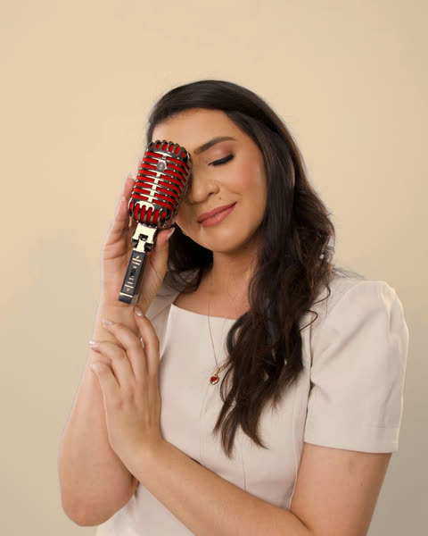

Só resta a mim cantar o amor.
Música ao vivo para casamentos, bodas e festas de 15 anos em Belo Horizonte e região, com a voz de Delliz Christine.
A mensagem já abre pronta no WhatsApp, sem compromisso.

A voz do Lumes Experience

Sou a Delliz Christine. No mesmo casamento, a voz que acompanha a entrada da noiva é a que volta à noite para abrir a pista.
Canto também no Jeito Ágape, ministério de música católica de Belo Horizonte, e sou uma das vozes da série Incondicional Sessions.
Na igreja, o repertório segue o que a paróquia pede. Na festa, segue o que vocês pedem.
Delliz Christine
Ouvir a DellizUm trecho, sem sair da página
A história de vocês vira repertório
Antes de escolher qualquer música, a gente quer ouvir a história de vocês.
Como vocês se conheceram?
Às vezes é dali que sai a música da entrada.
Que música é de vocês dois?
Ela pode tocar nas alianças, na saída ou na primeira dança.
Quem vocês querem homenagear?
A canção dos pais, a dos avós, a de quem vai fazer falta naquele dia.
Nas bodas, essa história já tem anos de música. Nos 15 anos, quem conta é a debutante.
Os momentos que a gente canta
-
Casamentos
Da entrada da noiva à saída dos noivos, na igreja ou ao ar livre, em cerimônia católica, evangélica ou ecumênica. Depois, o coquetel, o jantar, a primeira dança e a pista.
-
Bodas e renovação de votos
A música do casamento de vocês tocada de novo, na renovação dos votos e na festa com a família e os amigos.
-
Festas de 15 anos
A entrada da debutante, a valsa e a pista com os amigos, com as músicas que ela escolher.
Depois da comida, é a música que os convidados mais notam.
É ela que avisa que a noiva vai entrar e que segura o silêncio antes do sim. Ao vivo, ela espera quando a entrada atrasa e continua quando a pista pede mais.
Pesquisa do The Knot com convidados de casamentos nos Estados Unidos: “Wedding details guests care about most”.
O que a gente combina antes do dia
- As regras da igreja
Antes do dia, confirmamos com a paróquia ou com o cerimonial o que pode tocar e em que momento.
- O silêncio na hora certa
A música entra quando a noiva aparece na porta e se cala para os votos.
- Um fornecedor a menos
Vocês escolhem a formação, e o som pode vir junto, com o nosso equipamento.
Quem já viveu
“Quando a Delliz começou a cantar na entrada da noiva, a igreja inteira ficou em silêncio. Até hoje os convidados falam disso.”
Ana e Rafael, casamento Exemplo “Combinaram cada detalhe com a paróquia, e a pista não esvaziou. A gente só precisou aproveitar.”
Juliana e Pedro, casamento Exemplo “Na renovação dos nossos votos, tocaram a música do nosso casamento, 25 anos depois.”
Marta e José, bodas de prata Exemplo
Fotos e vídeos dos casamentos
Os primeiros registros de casamentos com o Lumes Experience entram aqui em breve. Enquanto isso, ouçam a Delliz em “Espírito Poderoso”, no YouTube.
Como reservar a data
Consultem a data
Mandem pelo WhatsApp o tipo de evento, a data, a cidade e o tipo de cerimônia.
Recebam a proposta
A gente conversa sobre os momentos, o estilo e a formação, e manda a proposta.
Montem o repertório
Com a data reservada, vocês escolhem com a gente a música de cada momento.
Perguntas frequentes
A resposta que faltar vem na conversa.
Consultar a data no WhatsAppValor e reserva
Quanto custa a música ao vivo para casamento em BH?
O valor do Lumes Experience é sob consulta, porque depende da data, do local, dos momentos com música (cerimônia, coquetel, jantar e pista), da duração e da formação. Mandem esses dados pelo WhatsApp e enviamos uma proposta, sem compromisso.
Como pedir uma proposta?
Pelo WhatsApp do Lumes Experience, no (31) 99615-4698. Mandem o tipo de evento, a data, a cidade e o local, o tipo de cerimônia e os momentos em que querem música. O botão do WhatsApp nesta página já abre a mensagem pronta para vocês completarem.
Com quanta antecedência devemos reservar?
Assim que tiverem a data e o local. A data só fica garantida depois da reserva, então quanto antes vocês consultarem, maior a chance de ela estar livre.
Cerimônia e repertório
O Lumes Experience toca na cerimônia e na festa?
Sim. Tocamos na cerimônia e na festa: coquetel, jantar, primeira dança e pista. Vocês escolhem os momentos com música, e a proposta acompanha essa escolha.
Tocam em casamento católico, evangélico ou ecumênico?
Sim. Tocamos em cerimônias católicas, evangélicas e ecumênicas, na igreja ou ao ar livre. Algumas igrejas permitem só música religiosa na cerimônia ou têm uma lista própria. Vale confirmar as orientações da igreja de vocês, e o repertório segue essas regras.
Tocam em bodas e festas de 15 anos?
Sim. Além de casamentos, fazemos bodas e renovação de votos e festas de 15 anos, na cerimônia e na festa.
Que música tocar na entrada da noiva?
Não existe uma música obrigatória: a escolha depende do rito e do estilo do casal. Entre os clássicos mais pedidos estão a Marcha Nupcial de Wagner, o Cânon em Ré de Pachelbel e a Ave Maria. A marcha de Mendelssohn costuma ficar para a saída dos noivos. Muitos casais preferem uma canção que tenha significado para os dois. Na igreja, confirmem antes se a música escolhida é permitida.
Podemos escolher as músicas?
Sim. O repertório é escolhido com vocês, momento a momento. Se quiserem uma música que não está no repertório, peçam com antecedência para avaliarmos o arranjo.
O grupo
Qual é a formação do grupo?
Vocês escolhem. A formação é montada para cada evento, de acordo com o estilo e o orçamento de vocês: mais enxuta, para uma cerimônia intimista, ou mais completa, para encher a pista.
O Lumes Experience leva o equipamento de som?
Sim. Temos equipamento de som próprio, que pode ser alugado junto com a música. Se o local já tiver som, avisem na mensagem para combinarmos o que for melhor para o espaço.
Quais cidades o Lumes Experience atende?
Belo Horizonte e a região metropolitana, como Contagem, Betim, Nova Lima, Lagoa Santa, Sabará, Santa Luzia e Brumadinho. Para eventos em outras cidades, consultem pelo WhatsApp.
Quem é Delliz Christine?
Delliz Christine é a cantora à frente do Lumes Experience. Ela integra o Jeito Ágape, ministério de música católica de Belo Horizonte, e é uma das vozes da série Incondicional Sessions.
Consultem a data
É só chamar no WhatsApp. A mensagem já abre pronta: completem com o que já sabem da festa e enviem.
A mensagem que abre no WhatsApp
Olá, Lumes Experience! Vi o site e quero consultar uma data. Evento: Data: Cidade e local: Cerimônia: Momentos com música:
Ou chamem no (31) 99615-4698. Sem compromisso.